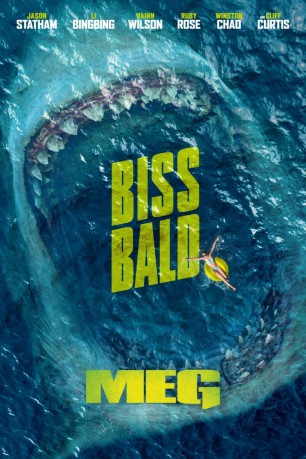

Alternativ: The Meg
 
 IMDB-Wertung: 5.8 / 10
IMDB-Wertung: 5.8 / 10  Metascore:
Metascore: 
Nachdem ein Tiefsee-U-Boot von einem ausgestorben geglaubten Riesenhai angegriffen wird, sinkt das Fahrzeug in den tiefsten Graben des Pazifik und liegt dort manövrierunfähig am Meeresgrund. Der Crew an Bord läuft allmählich die Zeit davon und daher engagiert der Meeresforscher Dr. Minway Zhang den erfahrenen Taucher Jonas Taylor. Taylor ist zwar Experte für Bergungen in der Tiefsee, allerdings ist er vor Jahren schon einmal mit dem urzeitlichen Riesenhai, einem mehr als 20 Meter langen Megalodon, aneinandergeraten. Doch gemeinsam mit Dr. Zhangs Tochter Suyin muss er nun seine Ängste überwinden und schwere Geschütze auffahren, um den eingeschlossenen Menschen zur Hilfe eilen zu können und die Weltmeere von der Schreckensherrschaft des Urzeitmonsters zu befreien…
Jahr: 2018
Dauer: 113 Minuten
FSK: 12
Land: USA Studio: Warner Bros.Tonspuren: DD5.1 - ,
Untertitel: Deutsch,
Auflösung: 1080p (1920x804) Größe: 5734 MB
Genre: Action, Thriller, Horror, Sci-Fi
Regisseur:  Jon Turteltaub
Jon Turteltaub
Drehbuch: Dean Georgaris, Jon Hoeber, Erich Hoeber, Steve Alten
Soundtrack: Harry Gregson-Williams
Darsteller:
Datei: X:\2018(G-M)\Meg (2018, FSK12, 1920x804) 3D.mkv seit 15.11.2018
Festplatte: HD 2018(G-Z)-2019(A-Z)
 Es gibt insgesamt 138 Filme in der Gruppe '2018(G-M)'
Es gibt insgesamt 138 Filme in der Gruppe '2018(G-M)'